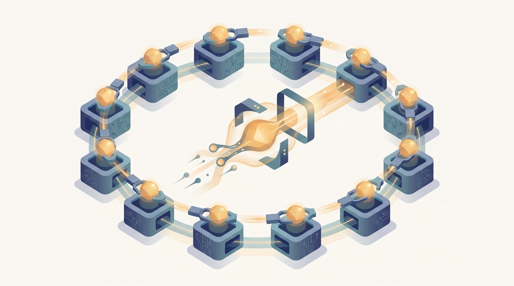

"They keep calling me a primitive, as if I were simple. I am the reason eight thousand GPUs agree on a single gradient before any of them dares take a step. Lose me for one millisecond and the whole cluster forgets how to learn together."
An All-Reduce That Has Seen Some Gradients
Distributed training is mostly a story about a few collective operations, and this chapter introduces every one of them through the AI computation that calls it rather than as abstract message-passing. Chapter 3 left you with a prediction: past some cluster size, the term that decides whether more machines help is not compute but communication, and the most expensive collective in data-parallel training is the all-reduce you learned to price with the alpha-beta model. This chapter opens that term. It catalogs the small vocabulary of collectives that every parallel method in the rest of the book is built from, and it grounds each one in the operation that needs it: all-reduce because data-parallel SGD must average gradients, all-gather and reduce-scatter because ZeRO and FSDP shard the model and must reassemble it, all-to-all because mixture-of-experts must route tokens to the experts that own them, broadcast and gather because parameter servers and actor-learner reinforcement learning must move weights and experience. The interconnect itself, NVLink, PCIe, InfiniBand, RDMA, is kept deliberately thin: just enough to explain why one collective algorithm beats another on real hardware, and no more. By the end you will read a parallel-training paper and see, underneath the method's name, the exact pattern of collectives it schedules and the bandwidth it pays for them.
Chapter Overview
A collective is a coordinated operation that a group of processes invoke together, each contributing data and each receiving a result that depends on what all the others contributed. There are only a handful of them, and once you know the handful you can decompose nearly every distributed-training system into a schedule over that small set. This chapter teaches the collectives in the order an AI workload meets them, not in the order a networking textbook would list them, because the operation that needs a primitive is the best place to understand what the primitive must guarantee and what it must cost.
The chapter opens by establishing why communication, and not arithmetic, is the quantity that bounds large-scale training, then lays down a thin model of the substrate that carries every message. With that foundation it walks the collectives one family at a time: the reduction that averages gradients, the gather-and-scatter pair that shards parameters, the all-to-all that shuffles tokens between experts, and the broadcast-and-gather that distributes weights and collects experience. It then descends to the libraries that implement these operations in production, the placement decisions that decide which links a collective traverses, and the scheduling trick that hides communication behind the backward pass so the network cost partly disappears.
Read in order, the ten sections take you from "communication is the bottleneck" to a working mental model in which every parallel-training method you will study later, data parallelism in Chapter 15, sharded and expert parallelism in Chapters 16 and 17, is a particular schedule over the primitives assembled here, running on a substrate whose topology you have learned to respect.
Prerequisites
This chapter assumes you have read Chapter 1: What Is Scale-Out AI?, Chapter 2: Distributed Systems Concepts for AI, and especially Chapter 3: Scalability and Performance Models. From Chapter 1 you carry the axes of distribution and the operational metrics; from Chapter 2 you carry the systems vocabulary of communication, collectives, and stragglers in words. The load-bearing prerequisite is the alpha-beta communication cost model of Section 3.8: this chapter uses the same latency term $\alpha$ and per-byte term $\beta$ to compare collective algorithms, so a ring all-reduce versus a tree all-reduce becomes a difference in two formulas you already know how to read. The scaling-efficiency argument of Section 3.9 is the reason communication cost matters at all, and it frames why the overlap technique of the final section is worth its complexity. No networking or high-performance-computing coursework is assumed; the substrate is introduced thinly and only where it changes a collective's cost. The mathematical background the book assumes is refreshed in Appendix A: Mathematical Background.
Learning Objectives
- Explain why communication, not compute, is the quantity that bounds large-scale distributed training, and identify the collective that dominates each parallel strategy.
- Name and define the core collectives, all-reduce, all-gather, reduce-scatter, all-to-all, broadcast, and gather, and state the AI operation that each one serves.
- Derive the alpha-beta cost of ring all-reduce and explain why bandwidth-optimal ring algorithms mattered for the rise of large-scale deep learning.
- Connect all-gather and reduce-scatter to the parameter sharding of ZeRO and FSDP, and all-to-all to token routing in mixture-of-experts models.
- Choose among NCCL, MPI, and Gloo for a given hardware and workload, and reason about topology-aware placement across NVLink, PCIe, and the network.
- Describe how overlapping communication with the backward pass and bucketing gradients hides communication cost, and estimate the resulting efficiency gain.
If you keep one thing from this chapter, keep this: distributed training reduces to a small vocabulary of collective operations, and each one is best understood through the AI computation that demands it, on a substrate whose topology decides what the collective costs. Read forward, the sections introduce the vocabulary in workload order: the reduction that averages gradients, the gather and scatter that shard parameters, the all-to-all that routes tokens, the broadcast and gather that move weights and experience, then the libraries, the placement, and the overlap that make all of it fast. Read as a question, the chapter is a lens you apply to any parallel-training system: which collectives does it call, how often, over how much data, on which links, and can the communication be hidden behind compute. The roadmap below walks the ten sections that build that vocabulary.
Chapter Roadmap
- 4.1 Why Communication, Not Compute, Bounds Distributed Training Picks up the alpha-beta cost from Chapter 3 to show that past a measurable cluster size it is the collective, not the arithmetic, that decides whether more machines help.
- 4.2 The Communication Substrate A deliberately thin view of point-to-point versus collective communication over NVLink, PCIe, InfiniBand, and RDMA, just enough to explain why algorithm choice depends on the links.
- 4.3 All-Reduce: Synchronizing Gradients in Data-Parallel SGD Introduces the most important collective through its defining use: averaging gradients across replicas so every worker takes the same step.
- 4.4 All-Reduce Algorithms, and Why Ring All-Reduce Mattered for Deep Learning Compares ring, tree, and recursive-halving all-reduce under the alpha-beta model, and explains why bandwidth-optimal ring algorithms unlocked large-scale training.
- 4.5 All-Gather and Reduce-Scatter: The Primitives Behind ZeRO and FSDP Decomposes all-reduce into its two halves and shows how ZeRO and FSDP use them to shard a model across machines and reassemble it on demand.
- 4.6 All-to-All: Routing Tokens in Mixture-of-Experts The collective that shuffles every token to the expert that owns it, the communication pattern that makes sparse expert models a distributed problem.
- 4.7 Broadcast and Gather: Weight and Experience Movement Examines the point-to-point broadcast and ring-pass patterns that distribute fresh policy weights to actor fleets; introduces context parallelism and Ring Attention as the sequence-dimension collective for long-context training; covers DiLoCo pseudo-gradient aggregation as the low-communication alternative to per-step all-reduce.
- 4.8 Communication Libraries (NCCL, MPI, Gloo) The production implementations that realize these collectives, and how to choose among them for a given accelerator, interconnect, and workload.
- 4.9 Topology-Aware Placement Why mapping ranks onto NVLink, PCIe, and network links in the right order can change a collective's cost by an order of magnitude.
- 4.10 Overlapping Communication with the Backward Pass, and Gradient Bucketing The scheduling trick that hides the all-reduce behind gradient computation, and the bucketing that makes the overlap efficient at scale.
Read the ten sections in order and you will hold the communication toolkit the rest of the book assumes on every page: Section 4.1 establishes why communication bounds training, Sections 4.2 through 4.7 build the vocabulary of collectives through the AI operations that use them, and Sections 4.8 through 4.10 make those collectives fast in practice. The thread to watch begins with the all-reduce of Section 4.3: the gradient synchronization you meet here is the same operation that data-parallel training in Chapter 15 schedules thousands of times per run, that the MapReduce shuffle of Chapter 6 foreshadows, and that reduce-scatter and all-gather split apart to make sharded training possible.
What's Next?
This chapter gave you the vocabulary of distributed training: all-reduce, all-gather, reduce-scatter, all-to-all, broadcast, and gather, each grounded in the AI operation that calls it, plus the libraries, placement, and overlap that make them efficient. Chapter 5: Evaluating Distributed AI Systems closes Part I by asking how you measure a system built from these primitives. The collectives you can now name become quantities you must benchmark: how does all-reduce bandwidth scale with the node count, where does the straggler hide in an all-to-all, and what does a fair scaling study of a sharded model even look like. Read it next, and the communication patterns this chapter taught you to recognize will become the measurements that decide whether a distributed system is working.
Bibliography & Further Reading
All-Reduce and Collective Algorithms
Patarasuk, P., Yuan, X. "Bandwidth Optimal All-reduce Algorithms for Clusters of Workstations." Journal of Parallel and Distributed Computing 69(2), 2009. cs.fsu.edu
The paper that established the ring all-reduce as bandwidth optimal; the algorithm and the cost analysis at the center of Section 4.4.
Thakur, R., Rabenseifner, R., Gropp, W. "Optimization of Collective Communication Operations in MPICH." International Journal of High Performance Computing Applications 19(1), 2005. mcs.anl.gov
The reference cost analysis of all-reduce, broadcast, reduce-scatter, and all-gather under the alpha-beta model, including the recursive-halving and ring variants compared in Sections 4.4 and 4.5.
Rabenseifner, R. "Optimization of Collective Reduction Operations." International Conference on Computational Science (ICCS), 2004. link.springer.com
The reduce-scatter-then-all-gather decomposition of all-reduce that underlies the bandwidth-optimal algorithms and the sharding primitives of Section 4.5.
Communication in Deep Learning
Sergeev, A., Del Balso, M. "Horovod: Fast and Easy Distributed Deep Learning in TensorFlow." arXiv:1802.05799, 2018. arxiv.org/abs/1802.05799
The framework that brought ring all-reduce to mainstream deep learning and made it the default gradient-synchronization primitive; the practical motivation for Section 4.4.
Rajbhandari, S., Rasley, J., Ruwase, O., He, Y. "ZeRO: Memory Optimizations Toward Training Trillion Parameter Models." arXiv:1910.02054, 2019. arxiv.org/abs/1910.02054
The work that shards optimizer state, gradients, and parameters across machines using all-gather and reduce-scatter; the system that makes Section 4.5 a parameter-sharding chapter.
Fedus, W., Zoph, B., Shazeer, N. "Switch Transformers: Scaling to Trillion Parameter Models with Simple and Efficient Sparsity." arXiv:2101.03961, 2021. arxiv.org/abs/2101.03961
The sparse expert model whose token routing is an all-to-all collective; the workload that grounds the all-to-all treatment of Section 4.6.
Goyal, P., Dollar, P., Girshick, R., et al. "Accurate, Large Minibatch SGD: Training ImageNet in 1 Hour." arXiv:1706.02677, 2017. arxiv.org/abs/1706.02677
The demonstration that data-parallel SGD scales to hundreds of GPUs once the all-reduce is overlapped and tuned; the empirical backdrop for Sections 4.3 and 4.10.
Tools & Libraries
NVIDIA Collective Communications Library (NCCL) Documentation. docs.nvidia.com
The production implementation of every collective in this chapter, topology-aware across NVLink and the network; the library Sections 4.8 and 4.9 take as their reference.
PyTorch Distributed Documentation: torch.distributed and DistributedDataParallel. pytorch.org
The API that exposes NCCL, MPI, and Gloo backends and the gradient bucketing of DistributedDataParallel; the framework realization of Sections 4.8 and 4.10.
MPI Forum. "MPI: A Message-Passing Interface Standard, Version 4.0." 2021. mpi-forum.org
MPI 4.1 (November 2023) is the current specification, adding clarifications to partitioned communication and a new Sessions model for dynamic process management; the collective semantics taught in this chapter are unchanged.
The standard that defines the collective semantics every later library inherits; the formal grounding for the operations named throughout Sections 4.3 to 4.8.
NVIDIA. "NVLink and NVSwitch: High-Speed GPU Interconnect." nvidia.com
The intra-node interconnect whose bandwidth advantage over PCIe drives the topology-aware placement decisions of Section 4.9.